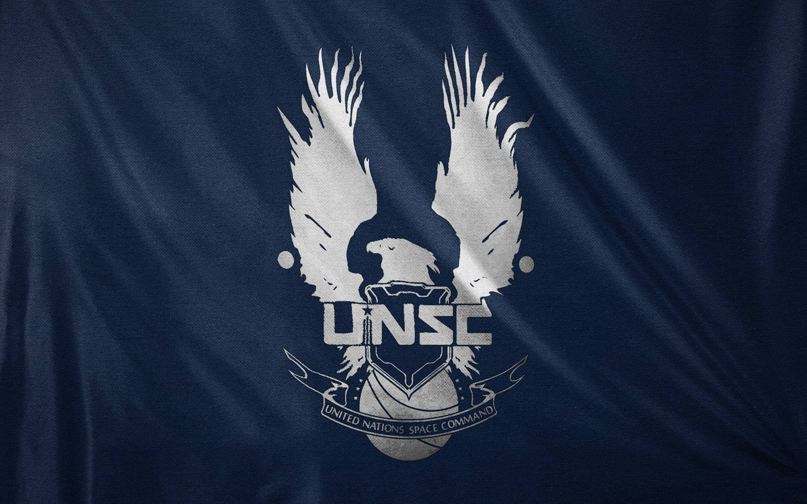
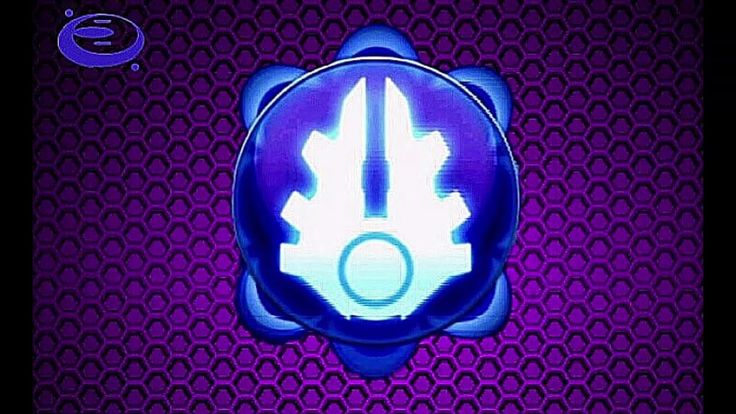

El Comando Espacial de las Naciones o Mando Espacial de las Naciones Unidas es la agencia militar, exploradora y científica del Gobierno Unificado de la Tierra (UEG). Formado en 2163, en un período donde los restos de viejas ideologías culturales se enfrentaban por la supremacía en el Sistema Solar, el UNSC servía principalmente como un observador de operaciones militares en el espacio de las Naciones Unidas.
El Proyecto ORION fue un proyecto de la Administración Militar Colonial para crear super-soldados para combatir en operaciones de contrainsurgencia. El programa sería conocido más tarde como SPARTAN-I cuando la ONI tomó el control total del proyecto. Los miembros del Proyecto ORION eran conocidos como Raiders.
El Proyecto ORION no solo analizaba la aumentación humana, sino que realizaba estudios e investigaciones que incluían armaduras, armas, softwares e incluso técnicas de entrenamiento. La mayoría de sus ideas nunca pasaron más allá de la prospección inicial y prototipos, pero hay vestigios de lo que la CMA y la ONI hubieran podido lograr. El Proyecto ORION tenía planes ambiciosos para sistemas completos de armas para sus super-soldados.

El Covenant, ( a veces referido como El Pacto o La Alianza en algunos doblajes), fue una alianza de especies alienígenas originalmente fundada por las especies Sangheili y San 'Shyuum con la esperanza de obtener más conocimiento sobre sus dioses, los Forerunner. Con el tiempo, el Covenant integró a los Lekgolo, los Yanme'e, los Kig-Yar, los Unggoy y los Jiralhanae.